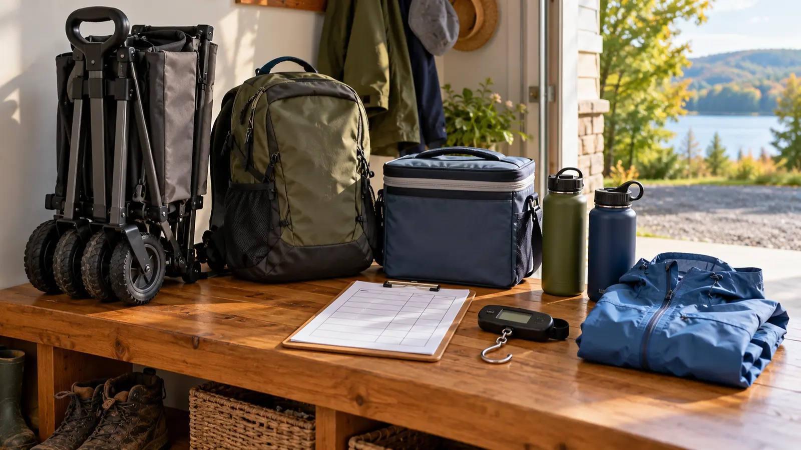

DAD SYSTEM · EDITABLE TOOL · DATA-LED
The Family Outing Load Calculator: Carry It, Cart It, or Leave It
A wagon is not a cure for packing too much. Total the real load, count the obstacles, protect the adult-controlled essentials and make the free cut-list before buying wheels.

The blunt version: this calculator does not decide what any adult can safely lift, pull or push. It totals the numbers you enter and exposes route friction. Medical limits, the exact cart manual, destination rules, weather and judgment still control the decision. A cargo-only wagon never becomes a child carrier because the spreadsheet has spare capacity.
Use the tool before shopping
The site's folding-wagon buying guide has begun earning Search Console impressions around the first page. The useful next step is not another list of wagons. It is a pre-purchase test that answers a different question: is the load actually heavy and awkward enough, over a compatible route, to justify wheels?
Put the items on a household or luggage scale when practical. Use manufacturer-labeled weights only when they match the exact item. Estimate honestly when neither is possible, then mark the estimate. The result is planning math, not a certification. Water, ice and food are often the weight people forget; add them in the state in which they leave the car.
The per-adult division is arithmetic only. It does not assign a safe lifting limit, account for uneven objects or make children into gear carriers. Nobody should use pain, age, pregnancy, disability or a medical condition as a contest. If lifting or mobility is uncertain, ask a qualified clinician or occupational professional and reduce the plan.
The six-line cut-list
- Protect: medication, appropriate first aid, necessary food/allergy controls, weather layers, water, keys, phone and required safety equipment stay adult-controlled and reachable.
- Share: one sunscreen, one family snack reserve and one repair pouch beat duplicates in every bag.
- Resize: transfer only where the original package is not required for identification, instructions or safety; never repackage medicine or chemicals casually.
- Stage: picnic chairs and a large cooler can stay at a legal car base when the family will return for lunch.
- Replace: a blanket can be seating and a wrap; a phone can hold an offline map, but never replace required emergency or navigation equipment.
- Remove: “maybe” entertainment, duplicate bottles and unassigned gear leave first.
Run the totals again after cutting. The second number is the buying number. If the calculator falls dramatically, the most valuable gear was permission to leave things home.
Map the route, not just the pounds
A smooth 200-yard paved approach and a 200-yard route with six steps, soft sand, a shuttle and a narrow gate are different jobs. On paper, mark parking surface, curb cuts, stairs, path width, steepest slope, soft ground, crowd pinch points, elevators, transit or boat transfers and the place where wheels must be folded. Verify the destination's current wagon rule; “strollers allowed” does not automatically mean every utility cart is allowed.
Do a no-buy rehearsal. Load the planned two bags and cooler, walk the longest home or driveway segment, set them down, open the essentials pouch and put everything back. Then repeat using a borrowed compatible cart if one is lawfully available. Stop if control, strain, traffic or child supervision becomes compromised. The day-trip system and family daypack guide help shrink and distribute the load before a purchase.
Three honest outcomes
Buying checks after the free test
For a cargo cart, compare the exact maker-stated load and use, empty weight, folded dimensions, wheel material and size, handle control, brake instructions, fabric removal and cleaning, replacement parts and storage. Measure the vehicle opening and the place the folded cart will occupy after every other passenger and item is loaded. A larger wheel may roll better on some surfaces but also increases folded bulk; “all terrain” is marketing unless the manual defines conditions.
For any child-approved wagon, the standard is higher: exact occupant ages and sizes, seating, restraint use, brakes, entry and exit, canopy clearance, bag placement and warnings. Check the U.S. Consumer Product Safety Commission recall database for the exact brand and model before buying used or new. A recall search is a snapshot, not a substitute for registration, manual updates and inspection.
Cost, weather and low-energy versions
Cost: the calculator and two-bag rehearsal are free. If borrowing, inspect the cart, get the manual and return it clean; do not assume another family's use proves your use. Weather: wet leaves, mud, snow and heat change surfaces and supervision. Recheck the route on the actual day. Low energy: enter only the cooler, water and clothing, then make one cut. Five accurate minutes beat a fictional full inventory.
Kid meltdown backup: keep the adult essentials pouch independent from the bulk load. If the cart, cooler or chairs must be abandoned temporarily to leave safely, medication, keys, identification and communication remain with the adult. Never put a child in a cargo wagon to solve a late-day energy crash.
Who should skip the cart
Skip when the venue prohibits it, the path has unavoidable stairs or narrow transfers, the adult cannot control it on slopes, the folded unit blocks safe vehicle loading, or the family expects a cargo-only product to carry children. Skip a purchase when the trimmed load works in two bags or the outing is mobile enough that parking the cart becomes another job.
Sources and editorial method
Reviewed October 22, 2026 by Mr Adventure Dad Editorial Desk. The calculator performs only visible addition and division; its route prompts, cut-list and decision outputs are editorial planning tools. Passenger and recall cautions are grounded in manufacturer-instruction discipline and the linked CPSC recall system. No personal lifting threshold, product capacity or venue rule is invented. Commercial links below are protected category searches using the site's approved affiliate configuration; they are not exact product endorsements or evidence of testing. Report sourced corrections through About.
MAKE THE WEEK COUNT
Useful beats heroic.
Build the plan your family can finish well, then leave enough energy for the next part of the day.
More family plansTHE USEFUL STUFF
Gear that removes friction.
These are practical categories to compare—not a reason to overpack. Check fit, specifications and current reviews before buying.
Paid links: As an Amazon Associate I earn from qualifying purchases. You pay no additional cost.
COMPARE ON AMAZON
Family day-trip pack
A comfortable pack keeps water, layers, snacks and small emergencies together.
See current options → COMPARE ON AMAZONLeak-resistant water bottles
Easy-to-carry bottles make regular water breaks less of a production.
See current options → COMPARE ON AMAZONCompact family first-aid kit
Keep one organized kit where an adult can reach it quickly.
See current options →